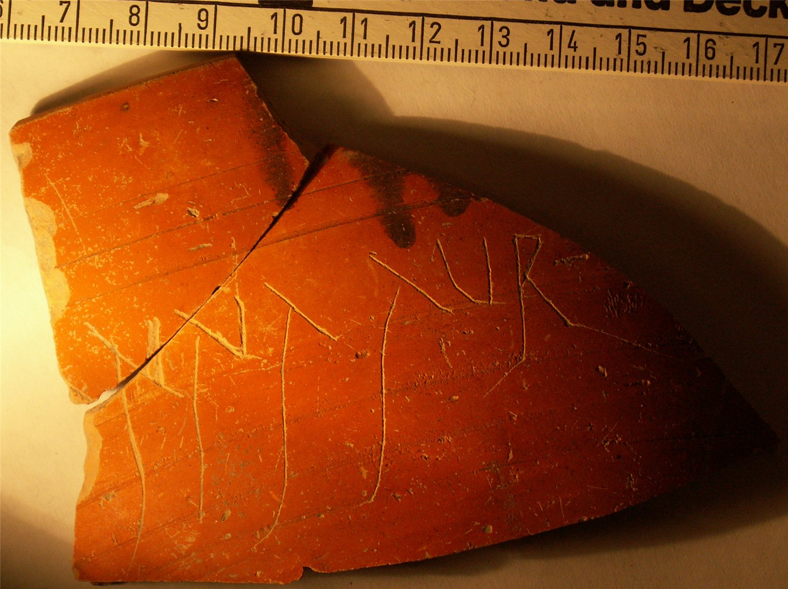

pompelo-044-nna
Grafito epigráfico «[P]ạnna Aur[eliae] (dudoso)» (Pompelo, Plaza del Castillo, Pamplona, Navarra)
Pompelo (Pamplona, Navarra), Hispania citerior · fin s. II-III d.C.

Texto
Aparato crítico
Lectura del artículo de 2009: ---]NNA AVR[¿. Lectura revisada por el autor: [P]ạnna Aur[eliae].
Comentario
Llama la atención la largura de los trazos de las letras. Podría tratarse del nombre de una mujer con el duo nomina, quizás Anna, a tenor de la A que parece apreciarse en el trazo anterior. El nombre Anna es conocido tanto como nomen como cognomen, aunque es mucho más habitual en el segundo de los casos. Tampoco se puede descartar que, en vez de un nominal, se trate de una referencia al recipiente: en la ciudad de Complutum se encontraron tres grafitos incompletos con referencias a la Panna (sartén o cazuela a la que Apicio hace varias referencias). Esta opción obligaría a buscar una explicación a la palabra AVR, ya que no parece continuar. Podría tratarse de una abreviatura de Aurelia, pero como cognomen resulta bastante excepcional. Los autores la citan, en las conclusiones, como ejemplo de escritura de calidad. Lectura revisada por el autor respecto a la del artículo de 2009 ([- - -]NNA AVR[- - -]): [P]ạnna Aur[eliae], con la A inicial de Aureliae en mayúscula por ser nombre propio.
Descripción
- Soporte
- Fragmento cerámico.
- Disposición
- Localización del grafito: Pared.
- Datación
- fin s. II-III d.C.
- Lugar de origen
- Pompelo (Pamplona, Navarra), Hispania citerior
- Hallazgo
- Excavación de la Plaza del Castillo de Pamplona (Gabinete Arqueológico Trama, 2001-2003), sector 3. Los estratos están revueltos (abundan las tumbas musulmanas del sector 3): la datación se basa en las formas cerámicas y el contexto es el de un barrio artesano.
- Ubicación actual
- Almacén de Arqueología del Gobierno de Navarra
Bibliografía
- M. Unzu; P. Ozcáriz Gil, «Grafitos nominales de la Plaza del Castillo de Pamplona», Los vascones de las fuentes antiguas: en torno a una etnia de la antigüedad peninsular (2009), pp. 499-512.